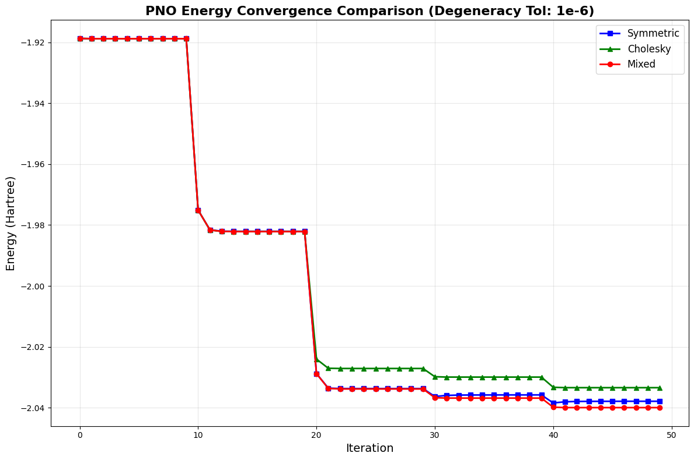

from time import time
import gc
import numpy as np
import tequila as tq
import frayedends
from pyscf import fci
import matplotlib.pyplot as plt
def run_calculation(ortho_method, config):
true_start = time()
print(f"\n{'=' * 80}")
print(f"Method: {ortho_method.upper()}")
print(f"{'=' * 80}\n")
geom = config["geometry"].replace("\\n", "\n")
n_orbitals = config["n_orbitals"]
degeneracy_tol = config["degeneracy_tol"]
units = "angstrom"
n_electrons = tq.quantumchemistry.ParametersQC(geometry=geom, units=units).total_n_electrons
world = frayedends.MadWorld3D()
madpno = frayedends.MadPNO(world, geom, units=units, n_orbitals=n_orbitals)
orbitals = madpno.get_orbitals()
print(frayedends.get_function_info(orbitals))
Vnuc = madpno.get_nuclear_potential()
nuc_repulsion = madpno.get_nuclear_repulsion()
integrals = frayedends.Integrals3D(world)
if ortho_method == "mixed":
info = frayedends.get_function_info(orbitals)
occupations = [orb_info["occ"] for orb_info in info]
orbitals = integrals.orthonormalize(
orbitals=orbitals, method=ortho_method, rdm1=occupations, degeneracy_tol=degeneracy_tol
)
else:
orbitals = integrals.orthonormalize(orbitals=orbitals, method=ortho_method, degeneracy_tol=degeneracy_tol)
for i in range(len(orbitals)):
world.line_plot(f"pnoorb{i}_{ortho_method}.dat", orbitals[i])
integrals = frayedends.Integrals3D(world)
S = integrals.compute_overlap_integrals(orbitals)
G = integrals.compute_two_body_integrals(orbitals, ordering="chem")
T = integrals.compute_kinetic_integrals(orbitals)
V = integrals.compute_potential_integrals(orbitals, Vnuc)
vqe_start = time()
mol = tq.Molecule(
geometry=geom, units=units, one_body_integrals=T + V, two_body_integrals=G, nuclear_repulsion=nuc_repulsion
)
edges = madpno.get_spa_edges()
U = mol.make_ansatz(name="SPA", edges=edges)
H = mol.make_hamiltonian()
E_vqe = tq.ExpectationValue(U, H)
result = tq.minimize(E_vqe, silent=True)
vqe_end = time()
print(f"Energy: {result.energy:+2.8f}")
del integrals
del madpno
del Vnuc
true_end = time()
print(f"\nTotal time for {ortho_method}: {true_end - true_start:.2f}s")
return world, result.energyOrthogonalization Methods in Pair Natural Orbital Optimization: A Comparative Study
code
1. Introduction
In electronic structure calculations, maintaining the orthogonality of orbitals during optimization is a fundamental requirement. This tutorial explores and compares three orthogonalization strategies: The Symmetric (Löwdin) method, the Cholesky decomposition, and a Mixed approach. By applying these methods during the refinement of Pair Natural Orbitals, we will examine their respective impacts on symmetry preservation and overall energy convergence.
2. Theory: Orthogonalization Methods
Cholesky Orthogonalization [2]
Cholesky orthogonalization is a matrix-based equivalent to the Gram-Schmidt process. It is computationally efficient but treats basis functions asymmetrically.
Prerequisites
The overlap matrix \(\mathbf{S}\) (where \(S_{ij} = \langle \phi_i | \phi_j \rangle\)) must satisfy: 1. Hermiticity: \(\mathbf{S} = \mathbf{S}^\dagger\) (or \(\mathbf{S} = \mathbf{S}^T\) for real orbitals). 2. Positive Definiteness: There must be no linear dependencies present in the basis (all eigenvalues \(> 0\)).
Structural Characteristics
The use of a triangular transformation matrix creates a hierarchical mixing of the ordered basis \([\phi_1, \phi_2, \dots, \phi_k]\):
- \(\psi_1\): Remains unchanged in shape; only normalized.
- \(\psi_2\): Orthogonalized against \(\psi_1\); contains components of \(\phi_1\) and \(\phi_2\).
- \(\psi_k\): Orthogonalized against all preceding \(k-1\) orbitals.
Physical Consequences: * Asymmetry: Orbitals are not treated equally. * Localization/Delocalization: Early orbitals retain original localization, while later orbitals might change and also can become delocalized.
Mathematical Background
\(\mathbf{S}\) is factorized into a lower triangular matrix \(\mathbf{L}\): \[\mathbf{S} = \mathbf{L} \mathbf{L}^\dagger\] The transformation matrix \(\mathbf{X}\) is then: \[\mathbf{X} = (\mathbf{L}^{-1})^\dagger\] Since \(\mathbf{L}^{-1}\) is also triangular, the mixing remains unidirectional.
Symmetric (Löwdin) Orthogonalization [2]
Löwdin orthogonalization utilizes a holistic approach to ensure the orthonormal basis \(\psi\) deviates minimally from the original basis \(\phi\).
Structural Characteristics
- Principle of Least Change: It minimizes the sum of squared deviations: \(\min \sum_i \left\| \psi_i - \phi_i \right\|^2\).
- Symmetric Treatment: Unlike the “fixed-anchor” approach of Cholesky, Löwdin adjusts all vectors equally to achieve orthogonality.
- Symmetry Preservation: It maintains the spatial symmetry properties of the original orbitals.
Mathematical Background
The transformation matrix \(\mathbf{X}\) is defined by the inverse square root of \(\mathbf{S}\): \[\mathbf{X} = \mathbf{S}^{-1/2}\] This is typically computed via Eigenvalue Decomposition (EVD): 1. Diagonalize: \(\mathbf{S} = \mathbf{U} \mathbf{\Lambda} \mathbf{U}^\dagger\) 2. Invert Roots: Compute \(\mathbf{\Lambda}^{-1/2}\) (reciprocal square roots of eigenvalues). 3. Reconstruct: \(\mathbf{S}^{-1/2} = \mathbf{U} \mathbf{\Lambda}^{-1/2} \mathbf{U}^\dagger\)
Mixed Orthogonalization
To balance stability and symmetry, our implementation follows a hybrid workflow:
- Grouping: Orbitals are grouped by occupation number. This process is governed by a configurable degeneracy tolerance numerical threshold that defines how close occupation numbers must be for orbitals to be clustered into the same degenerate set.
- Intra-group: Symmetric (Löwdin) orthogonalization is applied within these degenerate sets to preserve physical symmetry.
- Inter-group: Cholesky orthogonalization is used between the distinct groups.
With this approach we can maintain local symmetries where physically relevant and use the cholesky approach on all other orbitals.
3. Implementation
First Experiment - Standard PNOs
This experiment compares the three orthogonalization methods for quantum orbital optimization using Pair Natural Orbitals (PNOs). We generate PNOs from molecular geometries, apply different orthogonalization strategies, and evaluate their performance via Separable Pair Ansatz (SPA). Effectiveness is assessed by computing molecular integrals and comparing resulting ground-state energies. [1],[3],[4],[5]
Running the Experiment
The calculations are initialized using two \(H_2\) molecules arranged along the z-axis, defined via a geometry string.
We specify a basis size of six orbitals to ensure sufficient degrees of freedom for the PNO-based optimization.
config = {
"geometry": "H 0.0 0.0 -1.2\\nH 0.0 0.0 1.2\\nH 0.0 0.0 -0.4\\nH 0.0 0.0 0.4",
"n_orbitals": 6,
"degeneracy_tol": 1e-6,
}
world1, energie_symmetric = run_calculation("symmetric", config)
del world1
world2, energie_cholesky = run_calculation("cholesky", config)
del world2
world3, energie_mixed = run_calculation("mixed", config)
del world3Output
================================================================================
Method: SYMMETRIC
================================================================================
MADNESS runtime initialized with 7 threads in the pool and affinity OFF
[{'type': 'active', 'occ': 2.0, 'pair1': 0, 'pair2': 0}, {'type': 'active', 'occ': 2.0, 'pair1': 1, 'pair2': 1}, {'type': 'active', 'occ': 0.009236, 'pair1': 1, 'pair2': 1}, {'type': 'active', 'occ': 0.009236, 'pair1': 0, 'pair2': 0}, {'type': 'active', 'occ': 0.002434, 'pair1': 1, 'pair2': 1}, {'type': 'active', 'occ': 0.002434, 'pair1': 0, 'pair2': 0}]
Energy: -2.21700025
Total time for symmetric: 35.37s
================================================================================
Method: CHOLESKY
================================================================================
Finalize madness env
MADNESS runtime initialized with 7 threads in the pool and affinity OFF
[{'type': 'active', 'occ': 2.0, 'pair1': 0, 'pair2': 0}, {'type': 'active', 'occ': 2.0, 'pair1': 1, 'pair2': 1}, {'type': 'active', 'occ': 0.009236, 'pair1': 1, 'pair2': 1}, {'type': 'active', 'occ': 0.009236, 'pair1': 0, 'pair2': 0}, {'type': 'active', 'occ': 0.002434, 'pair1': 1, 'pair2': 1}, {'type': 'active', 'occ': 0.002434, 'pair1': 0, 'pair2': 0}]
Energy: -2.21511968
Total time for cholesky: 37.62s
================================================================================
Method: MIXED
================================================================================
Finalize madness env
MADNESS runtime initialized with 7 threads in the pool and affinity OFF
[{'type': 'active', 'occ': 2.0, 'pair1': 0, 'pair2': 0}, {'type': 'active', 'occ': 2.0, 'pair1': 1, 'pair2': 1}, {'type': 'active', 'occ': 0.009236, 'pair1': 1, 'pair2': 1}, {'type': 'active', 'occ': 0.009236, 'pair1': 0, 'pair2': 0}, {'type': 'active', 'occ': 0.002434, 'pair1': 1, 'pair2': 1}, {'type': 'active', 'occ': 0.002434, 'pair1': 0, 'pair2': 0}]
=== Mixed Orthonormalization ===
Orbital +0 occupation: +2.00000000
Orbital +1 occupation: +2.00000000
Orbital +2 occupation: +0.00923600
Orbital +3 occupation: +0.00923600
Orbital +4 occupation: +0.00243400
Orbital +5 occupation: +0.00243400
Found 3 degeneracy groups:
Group 0 (orbitals +0-+1): occupations=[+2.00000000, +2.00000000], method=Symmetric (within group)
Group 1 (orbitals +2-+3): occupations=[+0.00923600, +0.00923600], method=Symmetric (within group)
Group 2 (orbitals +4-+5): occupations=[+0.00243400, +0.00243400], method=Symmetric (within group)
=== Mixed Orthonormalization Complete ===
Energy: -2.21726497
Total time for mixed: 37.91s
Finalize madness env
results = [("Symmetric (Löwdin)", energie_symmetric), ("Cholesky", energie_cholesky), ("Mixed", energie_mixed)]
results_sorted = sorted(results, key=lambda x: x[1])
for method, energy in results_sorted:
print(f"{method:20s}: {energy:+2.8f} Ha")
print(f"{'=' * 80}\n")Mixed : -2.21726497 Ha
Symmetric (Löwdin) : -2.21700025 Ha
Cholesky : -2.21511968 Ha
================================================================================Analysis
The evaluation of the ground-state energies highlights the distinct advantage of the hybrid Mixed approach, which achieves the deepest energy minimum. By successfully clustering degenerate orbitals and applying the appropriate orthogonalization technique locally, this hybrid method leverages the physical preservation of the Symmetric (Löwdin) approach and the stability of the pure Cholesky method (which proved least effective) to actively outperform both individual algorithms.
Second Experiment - PNOs with incremental orbitals
In this subsequent experiment, we transition from a static evaluation to a dynamic optimization. Here orbitals are introduced incrementally into the active space one by one. [4]
The System uses an iterative optimization loop: For each newly added orbital, a Variational Quantum Eigensolver (VQE) calculates the ground-state energy and extracts the corresponding Reduced Density Matrices (RDMs). These RDMs are then utilized to iteratively update and refine the spatial shapes of the orbitals until the energy converges. [1], [4]
def run_calculation_incremental(ortho_method, config):
print(f"\nMethod: {ortho_method.upper()}")
geom = config["geometry"].replace("\\n", "\n")
n_orbitals_config = config["n_orbitals"]
max_iterations = config["max_iterations"]
degeneracy_tol = config["degeneracy_tol"]
units = "angstrom"
n_electrons = tq.quantumchemistry.ParametersQC(geometry=geom, units=units).total_n_electrons
world = frayedends.MadWorld3D()
madpno = frayedends.MadPNO(world, geom, units=units, n_orbitals=n_orbitals_config)
all_orbitals = madpno.get_orbitals()
nuc_repulsion = madpno.get_nuclear_repulsion()
Vnuc = madpno.get_nuclear_potential()
integrals = frayedends.Integrals3D(world)
energies = []
current = 0.0
current_orbitals = []
min_orbitals_needed = (n_electrons + 1) // 2
if ortho_method == "mixed":
initial_info = frayedends.get_function_info(all_orbitals)
occupations = [orb_info["occ"] for orb_info in initial_info]
for o in range(n_orbitals_config):
current_orbitals.append(all_orbitals[o])
print(f"Orbital {o + 1}/{n_orbitals_config}")
if ortho_method == "mixed":
current_orbitals = integrals.orthonormalize(
orbitals=current_orbitals, method=ortho_method, rdm1=occupations[: o + 1], degeneracy_tol=degeneracy_tol
)
else:
current_orbitals = integrals.orthonormalize(
orbitals=current_orbitals, method=ortho_method, degeneracy_tol=degeneracy_tol
)
if (o + 1) < min_orbitals_needed:
continue
for iteration in range(max_iterations):
integrals = frayedends.Integrals3D(world)
S = integrals.compute_overlap_integrals(current_orbitals)
G = integrals.compute_two_body_integrals(current_orbitals, ordering="chem")
T = integrals.compute_kinetic_integrals(current_orbitals)
V = integrals.compute_potential_integrals(current_orbitals, Vnuc)
vqe_start = time()
mol = tq.Molecule(
geometry=geom,
units=units,
one_body_integrals=T + V,
two_body_integrals=G,
nuclear_repulsion=nuc_repulsion,
)
edges = madpno.get_spa_edges()
U = mol.make_ansatz(name="SPA", edges=edges)
H = mol.make_hamiltonian()
E_vqe = tq.ExpectationValue(U, H)
result = tq.minimize(E_vqe, silent=True)
vqe_end = time()
print(f" Iteration {iteration}: E = {result.energy:+2.8f} (VQE: {vqe_end - vqe_start:.2f}s)")
energies.append(result.energy)
rdm1, rdm2 = mol.compute_rdms(U=U, variables=result.variables)
opti = frayedends.Optimization3D(world, Vnuc, nuc_repulsion=nuc_repulsion)
opti.set_orthonormalization_method(ortho_method, degeneracy_tol=degeneracy_tol)
current_orbitals = opti.get_orbitals(
orbitals=current_orbitals, rdm1=rdm1, rdm2=rdm2, opt_thresh=0.001, occ_thresh=0.001
)
del integrals
del madpno
del Vnuc
del all_orbitals
del current_orbitals
gc.collect()
return world, energiesRunning the Experiment
The selected geometry features intentionally short distances between the hydrogen pairs. It represents 4 Hydrogen atoms in the shape of a rectangle. As verified in previous experiments, this compact arrangement induces a higher degree of linear dependency among the spatial orbitals.
Computational Note: Executing this full optimization sequence can take up to two hours. If you prefer a faster runtime for testing purposes, you can reduce the number of active orbitals (n_orbitals) or the maximum VQE iterations (max_iterations). Please note that doing so will reduce the resolution of the convergence behavior and yield less definitive results.
geometry = "H 0.0 0.0 0.0\\nH 1.5 0.0 0.0\\nH 1.5 1.5 0.0\\nH 0.0 1.5 0.0"
config_1 = {
"geometry": geometry,
"n_orbitals": 6,
"units": "angstrom",
"degeneracy_tol": 1e-6,
"max_iterations": 10,
}
energy_config1 = {}
# Run for config_1
world1, energy_symmetric = run_calculation_incremental("symmetric", config_1)
energy_config1["symmetric"] = energy_symmetric
del world1
world2, energy_cholesky = run_calculation_incremental("cholesky", config_1)
energy_config1["cholesky"] = energy_cholesky
del world2
world3, energy_mixed = run_calculation_incremental("mixed", config_1)
energy_config1["mixed"] = energy_mixed
del world3Output
Method: SYMMETRIC
MADNESS runtime initialized with 7 threads in the pool and affinity OFF
Orbital 1/6
Orbital 2/6
Iteration 0: E = -1.91873060 (VQE: 0.07s)
Iteration 1: E = -1.91880586 (VQE: 0.05s)
Iteration 2: E = -1.91880592 (VQE: 0.06s)
Iteration 3: E = -1.91880593 (VQE: 0.05s)
Iteration 4: E = -1.91880593 (VQE: 0.06s)
Iteration 5: E = -1.91880593 (VQE: 0.05s)
Iteration 6: E = -1.91880593 (VQE: 0.06s)
Iteration 7: E = -1.91880593 (VQE: 0.06s)
Iteration 8: E = -1.91880593 (VQE: 0.06s)
Iteration 9: E = -1.91880593 (VQE: 0.06s)
Orbital 3/6
Iteration 0: E = -1.97507930 (VQE: 0.16s)
Iteration 1: E = -1.98156551 (VQE: 0.14s)
Iteration 2: E = -1.98201152 (VQE: 0.15s)
Iteration 3: E = -1.98205408 (VQE: 0.16s)
Iteration 4: E = -1.98205879 (VQE: 0.17s)
Iteration 5: E = -1.98205912 (VQE: 0.15s)
Iteration 6: E = -1.98205931 (VQE: 0.16s)
Iteration 7: E = -1.98205942 (VQE: 0.15s)
Iteration 8: E = -1.98205947 (VQE: 0.19s)
Iteration 9: E = -1.98205950 (VQE: 0.20s)
Orbital 4/6
Iteration 0: E = -2.02878382 (VQE: 0.42s)
Iteration 1: E = -2.03354928 (VQE: 0.45s)
Iteration 2: E = -2.03369070 (VQE: 0.43s)
Iteration 3: E = -2.03369653 (VQE: 0.51s)
Iteration 4: E = -2.03369719 (VQE: 0.41s)
Iteration 5: E = -2.03369751 (VQE: 0.46s)
Iteration 6: E = -2.03369766 (VQE: 0.47s)
Iteration 7: E = -2.03369773 (VQE: 0.48s)
Iteration 8: E = -2.03369776 (VQE: 0.46s)
Iteration 9: E = -2.03369777 (VQE: 0.54s)
Orbital 5/6
Iteration 0: E = -2.03631133 (VQE: 1.54s)
Iteration 1: E = -2.03595621 (VQE: 1.70s)
Iteration 2: E = -2.03584124 (VQE: 1.57s)
Iteration 3: E = -2.03581331 (VQE: 1.58s)
Iteration 4: E = -2.03580004 (VQE: 1.46s)
Iteration 5: E = -2.03579145 (VQE: 1.54s)
Iteration 6: E = -2.03578574 (VQE: 1.60s)
Iteration 7: E = -2.03578306 (VQE: 1.72s)
Iteration 8: E = -2.03578198 (VQE: 1.48s)
Iteration 9: E = -2.03578105 (VQE: 1.60s)
Orbital 6/6
Iteration 0: E = -2.03842265 (VQE: 4.57s)
Iteration 1: E = -2.03804993 (VQE: 4.21s)
Iteration 2: E = -2.03792677 (VQE: 4.08s)
Iteration 3: E = -2.03790060 (VQE: 4.35s)
Iteration 4: E = -2.03788873 (VQE: 4.33s)
Iteration 5: E = -2.03788079 (VQE: 4.55s)
Iteration 6: E = -2.03787534 (VQE: 4.65s)
Iteration 7: E = -2.03787273 (VQE: 4.53s)
Iteration 8: E = -2.03787166 (VQE: 4.36s)
Iteration 9: E = -2.03787074 (VQE: 4.28s)
Finalize madness env
Method: CHOLESKY
MADNESS runtime initialized with 7 threads in the pool and affinity OFF
Orbital 1/6
Orbital 2/6
Iteration 0: E = -1.91873281 (VQE: 0.07s)
Iteration 1: E = -1.91880586 (VQE: 0.08s)
Iteration 2: E = -1.91880592 (VQE: 0.07s)
Iteration 3: E = -1.91880593 (VQE: 0.07s)
Iteration 4: E = -1.91880593 (VQE: 0.06s)
Iteration 5: E = -1.91880593 (VQE: 0.06s)
Iteration 6: E = -1.91880593 (VQE: 0.08s)
Iteration 7: E = -1.91880593 (VQE: 0.07s)
Iteration 8: E = -1.91880593 (VQE: 0.09s)
Iteration 9: E = -1.91880593 (VQE: 0.08s)
Orbital 3/6
Iteration 0: E = -1.97507786 (VQE: 0.20s)
Iteration 1: E = -1.98162060 (VQE: 0.19s)
Iteration 2: E = -1.98209382 (VQE: 0.20s)
Iteration 3: E = -1.98214142 (VQE: 0.19s)
Iteration 4: E = -1.98214697 (VQE: 0.20s)
Iteration 5: E = -1.98214740 (VQE: 0.18s)
Iteration 6: E = -1.98214774 (VQE: 0.21s)
Iteration 7: E = -1.98214797 (VQE: 0.19s)
Iteration 8: E = -1.98214815 (VQE: 0.20s)
Iteration 9: E = -1.98214830 (VQE: 0.19s)
Orbital 4/6
Iteration 0: E = -2.02402426 (VQE: 0.53s)
Iteration 1: E = -2.02703997 (VQE: 0.53s)
Iteration 2: E = -2.02710214 (VQE: 0.55s)
Iteration 3: E = -2.02710391 (VQE: 0.62s)
Iteration 4: E = -2.02710407 (VQE: 0.53s)
Iteration 5: E = -2.02710417 (VQE: 0.53s)
Iteration 6: E = -2.02710425 (VQE: 0.53s)
Iteration 7: E = -2.02710432 (VQE: 0.53s)
Iteration 8: E = -2.02710439 (VQE: 0.51s)
Iteration 9: E = -2.02710446 (VQE: 0.54s)
Orbital 5/6
Iteration 0: E = -2.02980745 (VQE: 1.81s)
Iteration 1: E = -2.02992490 (VQE: 1.73s)
Iteration 2: E = -2.02993003 (VQE: 1.82s)
Iteration 3: E = -2.02993129 (VQE: 1.88s)
Iteration 4: E = -2.02993190 (VQE: 1.85s)
Iteration 5: E = -2.02993226 (VQE: 1.84s)
Iteration 6: E = -2.02993251 (VQE: 1.88s)
Iteration 7: E = -2.02993258 (VQE: 1.82s)
Iteration 8: E = -2.02993265 (VQE: 1.87s)
Iteration 9: E = -2.02993271 (VQE: 1.79s)
Orbital 6/6
Iteration 0: E = -2.03327405 (VQE: 6.02s)
Iteration 1: E = -2.03339981 (VQE: 6.09s)
Iteration 2: E = -2.03340705 (VQE: 6.18s)
Iteration 3: E = -2.03340884 (VQE: 6.36s)
Iteration 4: E = -2.03340964 (VQE: 6.07s)
Iteration 5: E = -2.03341006 (VQE: 6.16s)
Iteration 6: E = -2.03341033 (VQE: 6.17s)
Iteration 7: E = -2.03341047 (VQE: 6.06s)
Iteration 8: E = -2.03341054 (VQE: 6.47s)
Iteration 9: E = -2.03341060 (VQE: 6.21s)
Finalize madness env
Method: MIXED
MADNESS runtime initialized with 7 threads in the pool and affinity OFF
Orbital 1/6
=== Mixed Orthonormalization ===
Orbital +0 occupation: +2.00000000
Found 1 degeneracy groups:
Group 0 (orbital +0): occupation=+2.00000000, method=Cholesky
=== Mixed Orthonormalization Complete ===
Orbital 2/6
=== Mixed Orthonormalization ===
Orbital +0 occupation: +2.00000000
Orbital +1 occupation: +2.00000000
Found 1 degeneracy groups:
Group 0 (orbitals +0-+1): occupations=[+2.00000000, +2.00000000], method=Symmetric (within group)
=== Mixed Orthonormalization Complete ===
Iteration 0: E = -1.91873060 (VQE: 0.07s)
Iteration 1: E = -1.91880586 (VQE: 0.11s)
Iteration 2: E = -1.91880592 (VQE: 0.07s)
Iteration 3: E = -1.91880593 (VQE: 0.09s)
Iteration 4: E = -1.91880593 (VQE: 0.08s)
Iteration 5: E = -1.91880593 (VQE: 0.08s)
Iteration 6: E = -1.91880593 (VQE: 0.07s)
Iteration 7: E = -1.91880593 (VQE: 0.07s)
Iteration 8: E = -1.91880593 (VQE: 0.08s)
Iteration 9: E = -1.91880593 (VQE: 0.09s)
Orbital 3/6
=== Mixed Orthonormalization ===
Orbital +0 occupation: +2.000000
Orbital +1 occupation: +2.000000
Orbital +2 occupation: +0.049728
Found 2 degeneracy groups:
Group 0 (orbitals +0-+1): occupations=[+2.000000, +2.000000], method=Symmetric (within group)
Group 1 (orbital +2): occupation=+0.049728, method=Cholesky
=== Mixed Orthonormalization Complete ===
Iteration 0: E = -1.97507930 (VQE: 0.19s)
Iteration 1: E = -1.98162262 (VQE: 0.23s)
Iteration 2: E = -1.98209589 (VQE: 0.18s)
Iteration 3: E = -1.98214350 (VQE: 0.20s)
Iteration 4: E = -1.98214905 (VQE: 0.20s)
Iteration 5: E = -1.98214947 (VQE: 0.22s)
Iteration 6: E = -1.98214981 (VQE: 0.20s)
Iteration 7: E = -1.98215004 (VQE: 0.17s)
Iteration 8: E = -1.98215022 (VQE: 0.22s)
Iteration 9: E = -1.98215037 (VQE: 0.19s)
Orbital 4/6
=== Mixed Orthonormalization ===
Orbital +0 occupation: +2.000000
Orbital +1 occupation: +2.000000
Orbital +2 occupation: +0.049728
Orbital +3 occupation: +0.049728
Found 2 degeneracy groups:
Group 0 (orbitals +0-+1): occupations=[+2.000000, +2.000000], method=Symmetric (within group)
Group 1 (orbitals +2-+3): occupations=[+0.049728, +0.049728], method=Symmetric (within group)
=== Mixed Orthonormalization Complete ===
Iteration 0: E = -2.02880365 (VQE: 0.61s)
Iteration 1: E = -2.03366321 (VQE: 0.58s)
Iteration 2: E = -2.03382254 (VQE: 0.60s)
Iteration 3: E = -2.03382878 (VQE: 0.53s)
Iteration 4: E = -2.03382940 (VQE: 0.51s)
Iteration 5: E = -2.03382966 (VQE: 0.54s)
Iteration 6: E = -2.03382976 (VQE: 0.54s)
Iteration 7: E = -2.03382979 (VQE: 0.52s)
Iteration 8: E = -2.03382979 (VQE: 0.53s)
Iteration 9: E = -2.03382977 (VQE: 0.50s)
Orbital 5/6
=== Mixed Orthonormalization ===
Orbital +0 occupation: +2.000000
Orbital +1 occupation: +2.000000
Orbital +2 occupation: +0.049728
Orbital +3 occupation: +0.049728
Orbital +4 occupation: +0.003090
Found 3 degeneracy groups:
Group 0 (orbitals +0-+1): occupations=[+2.000000, +2.000000], method=Symmetric (within group)
Group 1 (orbitals +2-+3): occupations=[+0.049728, +0.049728], method=Symmetric (within group)
Group 2 (orbital +4): occupation=+0.003090, method=Cholesky
=== Mixed Orthonormalization Complete ===
Iteration 0: E = -2.03669856 (VQE: 1.83s)
Iteration 1: E = -2.03682699 (VQE: 1.79s)
Iteration 2: E = -2.03683329 (VQE: 1.88s)
Iteration 3: E = -2.03683462 (VQE: 1.86s)
Iteration 4: E = -2.03683503 (VQE: 1.98s)
Iteration 5: E = -2.03683511 (VQE: 1.95s)
Iteration 6: E = -2.03683506 (VQE: 1.82s)
Iteration 7: E = -2.03683503 (VQE: 1.93s)
Iteration 8: E = -2.03683500 (VQE: 1.76s)
Iteration 9: E = -2.03683496 (VQE: 1.77s)
Orbital 6/6
=== Mixed Orthonormalization ===
Orbital +0 occupation: +2.000000
Orbital +1 occupation: +2.000000
Orbital +2 occupation: +0.049728
Orbital +3 occupation: +0.049728
Orbital +4 occupation: +0.003090
Orbital +5 occupation: +0.003089
Found 3 degeneracy groups:
Group 0 (orbitals +0-+1): occupations=[+2.000000, +2.000000], method=Symmetric (within group)
Group 1 (orbitals +2-+3): occupations=[+0.049728, +0.049728], method=Symmetric (within group)
Group 2 (orbitals +4-+5): occupations=[+0.003090, +0.003089], method=Symmetric (within group)
=== Mixed Orthonormalization Complete ===
Iteration 0: E = -2.03982162 (VQE: 4.79s)
Iteration 1: E = -2.03994573 (VQE: 4.89s)
Iteration 2: E = -2.03995184 (VQE: 5.00s)
Iteration 3: E = -2.03995324 (VQE: 4.86s)
Iteration 4: E = -2.03995372 (VQE: 4.93s)
Iteration 5: E = -2.03995384 (VQE: 4.89s)
Iteration 6: E = -2.03995381 (VQE: 4.91s)
Iteration 7: E = -2.03995376 (VQE: 4.96s)
Iteration 8: E = -2.03995373 (VQE: 4.94s)
Iteration 9: E = -2.03995369 (VQE: 4.87s)
Finalize madness env
Plotting
This code generates a Plot of the energy convergence of the experiment
# Plot for config_1 (degeneracy_tol=1e-6)
colors = {"symmetric": "blue", "cholesky": "green", "mixed": "red"}
markers = {"symmetric": "s", "cholesky": "^", "mixed": "o"}
plt.figure(figsize=(12, 8))
for method_name, energies in energy_config1.items():
color = colors.get(method_name, "black")
marker = markers.get(method_name, "x")
plt.plot(
range(len(energies)),
energies,
marker=marker,
color=color,
linewidth=2,
markersize=6,
label=method_name.capitalize(),
)
plt.xlabel("Iteration", fontsize=14)
plt.ylabel("Energy (Hartree)", fontsize=14)
plt.title("PNO Energy Convergence Comparison (Degeneracy Tol: 1e-6)", fontsize=16, fontweight="bold")
plt.legend(fontsize=12, loc="best")
plt.grid(True, alpha=0.3)
plt.tight_layout()
plt.show()
Analysis
The convergence plot shows how the systems energy drops as orbitals are added one by one. Each sharp decrease in energy marks the addition of a new orbital, while the flat plateaus show the optimizer refining those orbitals.
The mixed orthogonalization algorithm successfully detects and clusters orbitals with the same occupation number. By applying the Symmetric method to preserve physical characteristics within these degenerate groups and using Cholesky for stability between them, the Mixed method leverages the strengths of both strategies. As evidenced by the final graph, this hybrid behavior not only diverges from the individual methods but actively outperforms them, achieving the deepest energy convergence.
References
- Langkabel, F., Knecht, S. & Kottmann, J. S. (2024). “The advent of fully variational quantum eigensolvers using a hybrid multiresolution approach”. arXiv preprint (p. 4, 6, 10, 16)
- Szabo, A. & Ostlund, N. S. (1996). Modern Quantum Chemistry: Introduction to Advanced Electronic Structure Theory. Dover Publications, Mineola, N. Y. (p. 16f., 143f.)
- Valeev et al., J. Chem. Theory Comput. 19, 2023 (p. 7231)
- Kottmann et al., J. Chem. Phys. 152, 2020
- Kottmann and Aspuru-Guzik, “Optimized Low-Depth Quantum Circuits for Molecular Electronic Structure Using a Separable Pair Approximation.”